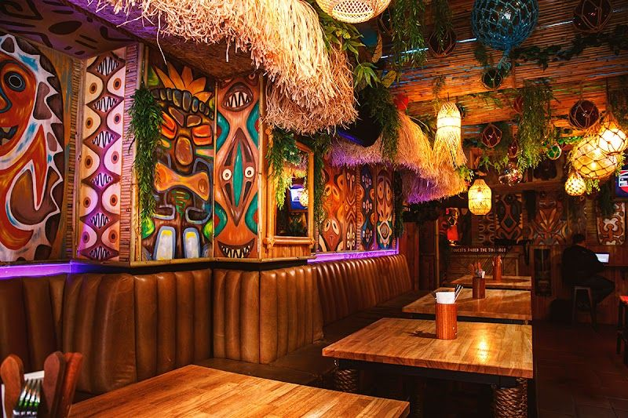
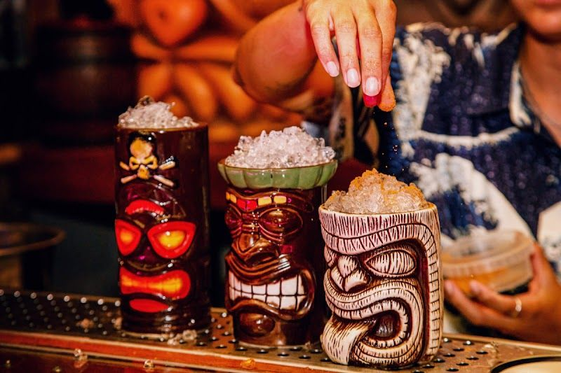

Experience Cape Town's finest cocktails and cuisine with unmatched service.
Get In TouchThe Tiki Tomb is not just a bar; it's a haven for cocktail enthusiasts and food lovers alike. Located in the heart of Cape Town, we pride ourselves on delivering an experience that is both unique and unforgettable. Our team is dedicated to serving the local community with a vibrant atmosphere and exceptional hospitality, making every visit a memorable one.
Our journey began with a vision to create a place where people could unwind and enjoy the finest selection of cocktails and culinary delights. Over the years, The Tiki Tomb has evolved into a cornerstone of the Cape Town dining scene, where guests can explore a diverse menu that caters to all tastes. From classic beverages to innovative creations, our offerings are crafted with passion and precision.
At The Tiki Tomb, we believe in providing more than just great food and drinks. Our commitment to customer satisfaction is unwavering, and we strive to exceed expectations with every service. We promise to deliver not just a meal, but an experience that leaves a lasting impression. Join us and become part of our story, where hospitality meets artistry.
At The Tiki Tomb, we offer a range of services designed to delight every visitor. Discover our unique offerings below.

Indulge in a culinary journey with our exquisite menu, featuring locally sourced ingredients and inspired by flavors from around the world. Our chefs are passionate about creating dishes that tantalize your taste buds.

Our cocktail bar offers a vibrant selection of classic and signature drinks, expertly crafted by our talented mixologists. Whether you're in the mood for a refreshing mojito or a bold new creation, we have something for everyone.
Here is what our clients say about us.
"Excellent service, the atmosphere is so great!"— Tanya, ⭐⭐⭐⭐⭐
We'd love to hear from you — reach out to us anytime.